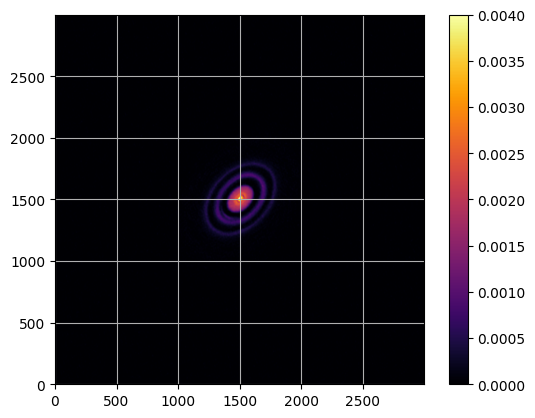
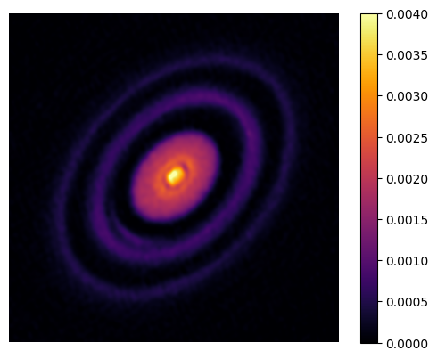
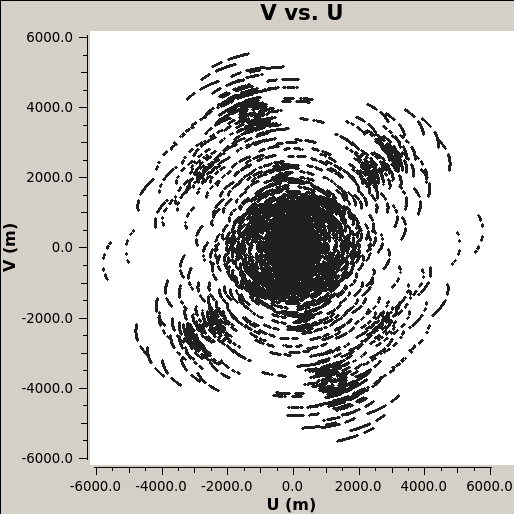
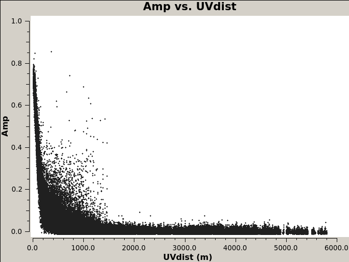
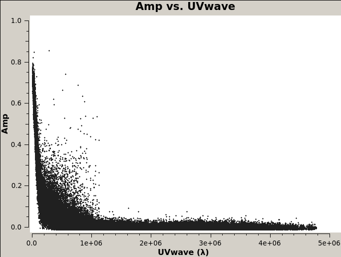
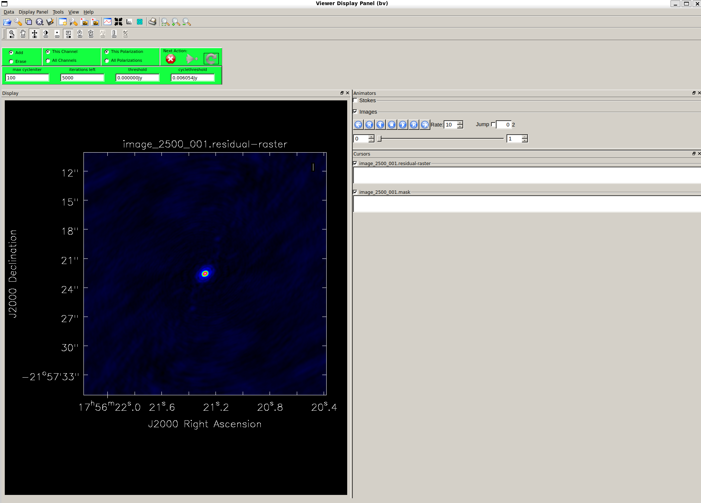
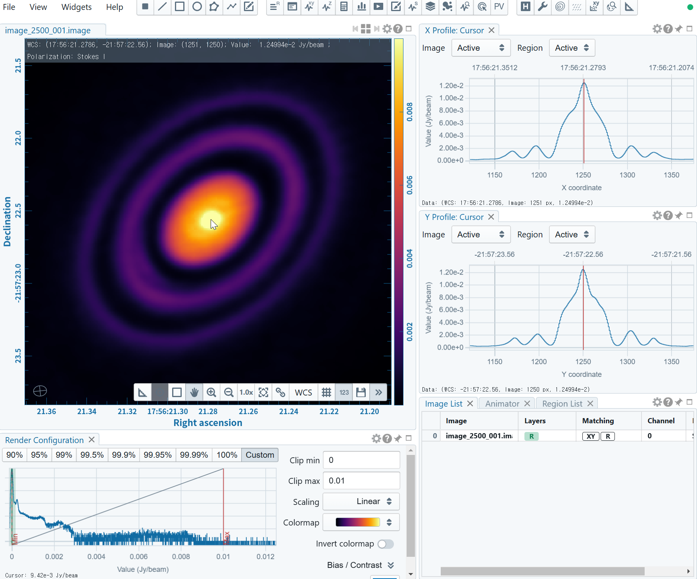
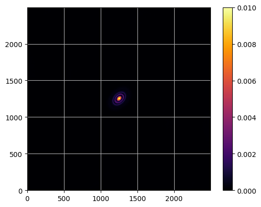
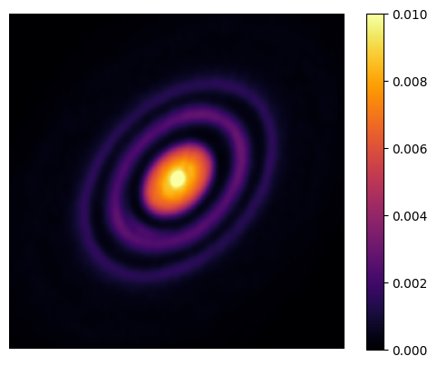

!wget https://almascience.eso.org/almadata/lp/DSHARP/MSfiles/HD163296_continuum.ms.tgzThis post is based on a project conducted during the “Radio Astronomy” lecture in 2024 by Professor Jongho Park at Kyung Hee University.
CASA
We use CASA for imaging of HD163296.
CASA, the Common Astronomy Software Applications package, is the primary data processing software for the Atacama Large Millimeter/submillimeter Array (ALMA) and NSF’s Karl G. Jansky Very Large Array (VLA), and is frequently used also for other radio telescopes.
Install CASA according to the instructions.
$ casa --version
CASA 6.6.1.17HD163296
HD 163296 is the Herbig Ae star with the protoplanetary disk which has ringed structures.


We will obtain an image similar to the above figures.
Observational data
The observational data for HD 163296 is provided by Disk Substructures at High Angular Resolution Project (DSHARP) here. Generally, science verification data from ALMA can be obtained here.
First, download the calibrated 240 GHz (1.25 mm) continuum data for HD 163296 and the corresponding reference FITS file.
!wget https://almascience.eso.org/almadata/lp/DSHARP/images/HD163296_continuum.fitsReference Image
from astropy.io import fits
import matplotlib.pyplot as plt!ls *.fitsHD163296_continuum.fitshdul = fits.open('HD163296_continuum.fits')
hdul.info()Filename: HD163296_continuum.fits
No. Name Ver Type Cards Dimensions Format
0 PRIMARY 1 PrimaryHDU 80 (3000, 3000, 1, 1) float32 hdul[0].headerSIMPLE = T /Standard FITS
BITPIX = -32 /Floating point (32 bit)
NAXIS = 4
NAXIS1 = 3000
NAXIS2 = 3000
NAXIS3 = 1
NAXIS4 = 1
EXTEND = T
BSCALE = 1.000000000000E+00 /PHYSICAL = PIXEL*BSCALE + BZERO
BZERO = 0.000000000000E+00
BMAJ = 1.327810291615E-05
BMIN = 1.065220373372E-05
BPA = 8.172735595703E+01
BTYPE = 'Intensity'
OBJECT = 'HD_163296'
BUNIT = 'Jy/beam ' /Brightness (pixel) unit
EQUINOX = 2.000000000000E+03
RADESYS = 'FK5 '
LONPOLE = 1.800000000000E+02
LATPOLE = -2.195626763250E+01
PC1_1 = 1.000000000000E+00
PC2_1 = 0.000000000000E+00
PC3_1 = 0.000000000000E+00
PC4_1 = 0.000000000000E+00
PC1_2 = 0.000000000000E+00
PC2_2 = 1.000000000000E+00
PC3_2 = 0.000000000000E+00
PC4_2 = 0.000000000000E+00
PC1_3 = 0.000000000000E+00
PC2_3 = 0.000000000000E+00
PC3_3 = 1.000000000000E+00
PC4_3 = 0.000000000000E+00
PC1_4 = 0.000000000000E+00
PC2_4 = 0.000000000000E+00
PC3_4 = 0.000000000000E+00
PC4_4 = 1.000000000000E+00
CTYPE1 = 'RA---SIN'
CRVAL1 = 2.690886636250E+02
CDELT1 = -8.333333333333E-07
CRPIX1 = 1.501000000000E+03
CUNIT1 = 'deg '
CTYPE2 = 'DEC--SIN'
CRVAL2 = -2.195626763250E+01
CDELT2 = 8.333333333333E-07
CRPIX2 = 1.501000000000E+03
CUNIT2 = 'deg '
CTYPE3 = 'FREQ '
CRVAL3 = 2.389831417597E+11
CDELT3 = 1.783671575558E+10
CRPIX3 = 1.000000000000E+00
CUNIT3 = 'Hz '
CTYPE4 = 'STOKES '
CRVAL4 = 1.000000000000E+00
CDELT4 = 1.000000000000E+00
CRPIX4 = 1.000000000000E+00
CUNIT4 = ' '
PV2_1 = 0.000000000000E+00
PV2_2 = 0.000000000000E+00
RESTFRQ = 2.305380000000E+11 /Rest Frequency (Hz)
SPECSYS = 'LSRK ' /Spectral reference frame
ALTRVAL = -1.098209321798E+07 /Alternate frequency reference value
ALTRPIX = 1.000000000000E+00 /Alternate frequency reference pixel
VELREF = 257 /1 LSR, 2 HEL, 3 OBS, +256 Radio
COMMENT casacore non-standard usage: 4 LSD, 5 GEO, 6 SOU, 7 GAL
TELESCOP= 'ALMA '
OBSERVER= 'mhughes '
DATE-OBS= '2014-06-04T07:20:48.432000'
TIMESYS = 'UTC '
OBSRA = 2.690886636250E+02
OBSDEC = -2.195626763250E+01
OBSGEO-X= 2.225142180269E+06
OBSGEO-Y= -5.440307370349E+06
OBSGEO-Z= -2.481029851874E+06
OBJECT = 'HD_163296'
TELESCOP= 'ALMA '
INSTRUME= 'ALMA '
DISTANCE= 0.000000000000E+00
DATE = '2018-07-03T02:34:04.576000' /Date FITS file was written
ORIGIN = 'CASA 5.1.1-5' hdul[0].data.shape(1, 1, 3000, 3000)data = hdul[0].data.squeeze()
data.shape(3000, 3000)hdul.close()import numpy as npplt.imshow(data.T, cmap='inferno', origin='lower', vmin=0, vmax=0.004)
plt.grid()
plt.colorbar()
plt.show()
plt.imshow(data.T[1100:1900, 1100:1900], cmap='inferno', origin='lower', vmin=0, vmax=0.004)
plt.axis('off')
plt.colorbar()
plt.show()
Imaging with CASA
We will do a very simple imaging; for complete imaging, refer to python scripts from DSHARP.
!tar -xzf HD163296_continuum.ms.tgz!ls HD163296_continuum.msANTENNA PROCESSOR table.f17 table.f24
ASDM_ANTENNA SOURCE table.f17_TSM1 table.f24_TSM1
ASDM_CALATMOSPHERE SPECTRAL_WINDOW table.f17_TSM2 table.f25
ASDM_CALWVR STATE table.f17_TSM3 table.f25_TSM1
ASDM_RECEIVER SYSCAL table.f18 table.f25_TSM2
ASDM_SOURCE SYSPOWER table.f19 table.f25_TSM3
ASDM_STATION WEATHER table.f2 table.f3
CALDEVICE table.dat table.f20 table.f4
DATA_DESCRIPTION table.f1 table.f21 table.f5
FEED table.f10 table.f21_TSM0 table.f6
FIELD table.f11 table.f22 table.f7
FLAG_CMD table.f12 table.f22_TSM1 table.f8
HISTORY table.f13 table.f22_TSM2 table.f9
OBSERVATION table.f14 table.f22_TSM3 table.info
POINTING table.f15 table.f23 table.lock
POLARIZATION table.f16 table.f23_TSM1HD163296_continuum.ms: The “Measurement Set” (CASA version of the visibilities)
Run casa in the directory that contains the .ms.
$ casa
CASA: ls
HD163296_continuum.msCASA has “tasks” - inp <task name>: shows input parameters of the task
CASA: inp listobs
# listobs -- Get the summary of a MeasurementSet and list it in the logger or in a file
vis = '' # Name of input visibility file (MS)
selectdata = True # Data selection parameters
spw = '' # Selection based on spectral-window/frequency/channel.
field = '' # Selection based on field names or field index numbers. Default
# is all.
antenna = '' # Selection based on antenna/baselines. Default is all.
uvrange = '' # Selection based on uv range. Default: entire range. Default
# units: meters.
timerange = '' # Selection based on time range. Default is entire range.
correlation = '' # Selection based on correlation. Default is all.
scan = '' # Selection based on scan numbers. Default is all.
intent = '' # Selection based on observation intent. Default is all.
feed = '' # Selection based on multi-feed numbers: Not yet implemented
array = '' # Selection based on (sub)array numbers. Default is all.
observation = '' # Selection based on observation ID. Default is all.
verbose = True # Controls level of information detail reported. True reports more
# than False.
listfile = '' # Name of disk file to write output. Default is none (output is
# written to logger only).
listunfl = False # List unflagged row counts? If true, it can have significant
# negative performance impact.
cachesize = 50.0 # EXPERIMENTAL. Maximum size in megabytes of cache in which data
# structures can be held.There is also online document for tasks: here for listobs
Run listobs.
CASA: listobs(vis="HD163296_continuum.ms", listfile="HD163296_continuum.ms.listobs")Then we get the information about the data.
!cat HD163296_continuum.ms.listobs================================================================================
MeasurementSet Name: /home/mgj/wsl-ws/mgjeon.github.io/posts/CASA/HD163296_continuum.ms MS Version 2
================================================================================
Observer: mhughes Project: uid://A001/X10f/X267
Observation: ALMA
Telescope Observation Date Observer Project
ALMA [ 4.90858e+09, 4.90859e+09]mhughes uid://A001/X10f/X267
ALMA [ 4.90944e+09, 4.90945e+09]mhughes uid://A001/X10f/X267
ALMA [ 4.90962e+09, 4.90962e+09]mhughes uid://A001/X10f/X267
ALMA [ 4.90971e+09, 4.90971e+09]mhughes uid://A001/X10f/X267
ALMA [ 4.91074e+09, 4.91074e+09]mhughes uid://A001/X10f/X267
ALMA [ 4.94546e+09, 4.94547e+09]isella uid://A001/X10e/X583
ALMA [ 4.94572e+09, 4.94573e+09]isella uid://A001/X10e/X583
ALMA [ 4.9458e+09, 4.9458e+09]isella uid://A001/X10e/X583
ALMA [ 5.01163e+09, 5.01163e+09]sandrews uid://A001/X5ac/X43f
ALMA [ 5.01163e+09, 5.01163e+09]sandrews uid://A001/X5ac/X43f
Data records: 2393820 Total elapsed time = 1.0305e+08 seconds
Observed from 04-Jun-2014/07:20:33.3 to 09-Sep-2017/00:27:07.7 (UTC)
ObservationID = 0 ArrayID = 0
Date Timerange (UTC) Scan FldId FieldName nRows SpwIds Average Interval(s) ScanIntent
04-Jun-2014/07:20:33.3 - 07:27:24.9 10 0 HD_163296 12844 [0,1] [30, 30] [CALIBRATE_WVR#ON_SOURCE,OBSERVE_TARGET#ON_SOURCE]
07:28:38.5 - 07:35:30.0 12 0 HD_163296 12844 [0,1] [30, 30] [CALIBRATE_WVR#ON_SOURCE,OBSERVE_TARGET#ON_SOURCE]
07:37:20.1 - 07:44:11.6 16 0 HD_163296 12844 [0,1] [30, 30] [CALIBRATE_WVR#ON_SOURCE,OBSERVE_TARGET#ON_SOURCE]
07:45:33.7 - 07:52:25.3 18 0 HD_163296 12844 [0,1] [30, 30] [CALIBRATE_WVR#ON_SOURCE,OBSERVE_TARGET#ON_SOURCE]
07:54:20.6 - 08:01:12.2 22 0 HD_163296 12844 [0,1] [29.9, 29.9] [CALIBRATE_WVR#ON_SOURCE,OBSERVE_TARGET#ON_SOURCE]
08:02:25.5 - 08:09:17.1 24 0 HD_163296 12844 [0,1] [30, 30] [CALIBRATE_WVR#ON_SOURCE,OBSERVE_TARGET#ON_SOURCE]
08:11:08.5 - 08:18:00.1 28 0 HD_163296 12844 [0,1] [29.9, 29.9] [CALIBRATE_WVR#ON_SOURCE,OBSERVE_TARGET#ON_SOURCE]
08:19:20.9 - 08:23:33.6 30 0 HD_163296 7614 [0,1] [30.1, 30.1] [CALIBRATE_WVR#ON_SOURCE,OBSERVE_TARGET#ON_SOURCE]
ObservationID = 1 ArrayID = 0
Date Timerange (UTC) Scan FldId FieldName nRows SpwIds Average Interval(s) ScanIntent
14-Jun-2014/06:30:00.0 - 06:36:51.6 31 0 HD_163296 14128 [2,3] [30.2, 30.2] [CALIBRATE_WVR#ON_SOURCE,OBSERVE_TARGET#ON_SOURCE]
06:38:02.4 - 06:44:54.0 33 0 HD_163296 14547 [2,3] [29.6, 30.1] [CALIBRATE_WVR#ON_SOURCE,OBSERVE_TARGET#ON_SOURCE]
06:46:39.9 - 06:53:31.5 37 0 HD_163296 14547 [2,3] [30.2, 30.2] [CALIBRATE_WVR#ON_SOURCE,OBSERVE_TARGET#ON_SOURCE]
06:54:49.3 - 07:01:40.9 39 0 HD_163296 14547 [2,3] [30, 30] [CALIBRATE_WVR#ON_SOURCE,OBSERVE_TARGET#ON_SOURCE]
07:03:33.8 - 07:10:25.3 43 0 HD_163296 14547 [2,3] [30, 30] [CALIBRATE_WVR#ON_SOURCE,OBSERVE_TARGET#ON_SOURCE]
07:11:35.3 - 07:18:26.8 45 0 HD_163296 14547 [2,3] [30, 30] [CALIBRATE_WVR#ON_SOURCE,OBSERVE_TARGET#ON_SOURCE]
07:20:14.6 - 07:27:06.2 49 0 HD_163296 15363 [2,3] [30.1, 30.1] [CALIBRATE_WVR#ON_SOURCE,OBSERVE_TARGET#ON_SOURCE]
07:28:24.6 - 07:32:37.3 51 0 HD_163296 9363 [2,3] [30.1, 30.1] [CALIBRATE_WVR#ON_SOURCE,OBSERVE_TARGET#ON_SOURCE]
ObservationID = 2 ArrayID = 0
Date Timerange (UTC) Scan FldId FieldName nRows SpwIds Average Interval(s) ScanIntent
16-Jun-2014/07:19:06.0 - 07:25:57.5 52 0 HD_163296 15297 [4,5] [30.1, 30.1] [CALIBRATE_WVR#ON_SOURCE,OBSERVE_TARGET#ON_SOURCE]
07:27:06.6 - 07:33:58.1 54 0 HD_163296 15431 [4,5] [30, 30] [CALIBRATE_WVR#ON_SOURCE,OBSERVE_TARGET#ON_SOURCE]
07:35:42.5 - 07:42:34.1 58 0 HD_163296 15431 [4,5] [30, 30] [CALIBRATE_WVR#ON_SOURCE,OBSERVE_TARGET#ON_SOURCE]
07:43:51.0 - 07:50:42.6 60 0 HD_163296 15431 [4,5] [30, 30] [CALIBRATE_WVR#ON_SOURCE,OBSERVE_TARGET#ON_SOURCE]
08:09:10.1 - 08:16:01.6 70 0 HD_163296 15431 [4,5] [30, 30] [CALIBRATE_WVR#ON_SOURCE,OBSERVE_TARGET#ON_SOURCE]
08:17:19.5 - 08:21:32.2 72 0 HD_163296 9118 [4,5] [30.1, 30.1] [CALIBRATE_WVR#ON_SOURCE,OBSERVE_TARGET#ON_SOURCE]
ObservationID = 3 ArrayID = 0
Date Timerange (UTC) Scan FldId FieldName nRows SpwIds Average Interval(s) ScanIntent
17-Jun-2014/07:51:58.1 - 07:58:49.7 79 0 HD_163296 10517 [6,7] [30, 30] [OBSERVE_TARGET#ON_SOURCE]
08:00:04.1 - 08:06:55.6 81 0 HD_163296 10517 [6,7] [29.8, 29.8] [OBSERVE_TARGET#ON_SOURCE]
08:08:42.7 - 08:15:34.3 85 0 HD_163296 10305 [6,7] [30, 30] [OBSERVE_TARGET#ON_SOURCE]
08:16:39.5 - 08:23:31.1 87 0 HD_163296 10517 [6,7] [29.9, 29.9] [OBSERVE_TARGET#ON_SOURCE]
08:25:12.3 - 08:32:03.8 91 0 HD_163296 10517 [6,7] [30, 30] [OBSERVE_TARGET#ON_SOURCE]
08:33:17.1 - 08:37:29.8 93 0 HD_163296 6261 [6,7] [30, 30] [OBSERVE_TARGET#ON_SOURCE]
ObservationID = 4 ArrayID = 0
Date Timerange (UTC) Scan FldId FieldName nRows SpwIds Average Interval(s) ScanIntent
29-Jun-2014/05:56:27.1 - 06:03:18.6 94 0 HD_163296 12132 [8,9] [30.1, 30.1] [OBSERVE_TARGET#ON_SOURCE]
06:04:26.5 - 06:11:18.0 96 0 HD_163296 12493 [8,9] [30, 30] [OBSERVE_TARGET#ON_SOURCE]
06:14:20.8 - 06:21:12.3 100 0 HD_163296 12493 [8,9] [30.1, 30.1] [OBSERVE_TARGET#ON_SOURCE]
06:22:21.6 - 06:29:13.2 102 0 HD_163296 12493 [8,9] [30.1, 30.1] [OBSERVE_TARGET#ON_SOURCE]
06:32:01.7 - 06:38:53.3 106 0 HD_163296 12493 [8,9] [30, 29.9] [OBSERVE_TARGET#ON_SOURCE]
06:40:00.0 - 06:46:51.6 108 0 HD_163296 12493 [8,9] [29.9, 29.9] [OBSERVE_TARGET#ON_SOURCE]
06:49:54.2 - 06:56:45.8 112 0 HD_163296 12493 [8,9] [30, 30] [OBSERVE_TARGET#ON_SOURCE]
06:57:52.4 - 07:02:05.0 114 0 HD_163296 7688 [8,9] [30, 30] [OBSERVE_TARGET#ON_SOURCE]
ObservationID = 5 ArrayID = 0
Date Timerange (UTC) Scan FldId FieldName nRows SpwIds Average Interval(s) ScanIntent
05-Aug-2015/04:33:46.3 - 04:40:06.1 115 0 HD_163296 15552 [10,11] [29.8, 29.8] [OBSERVE_TARGET#ON_SOURCE]
04:41:15.7 - 04:48:07.3 117 0 HD_163296 16777 [10,11] [29.9, 29.9] [OBSERVE_TARGET#ON_SOURCE]
04:52:39.5 - 04:58:59.3 123 0 HD_163296 15984 [10,11] [30, 30] [OBSERVE_TARGET#ON_SOURCE]
05:00:09.0 - 05:07:00.6 125 0 HD_163296 17316 [10,11] [29.7, 29.7] [OBSERVE_TARGET#ON_SOURCE]
05:11:31.5 - 05:17:51.3 131 0 HD_163296 15984 [10,11] [30.1, 30.1] [OBSERVE_TARGET#ON_SOURCE]
05:19:01.6 - 05:25:53.2 133 0 HD_163296 16884 [10,11] [29.9, 29.9] [OBSERVE_TARGET#ON_SOURCE]
05:30:23.9 - 05:36:43.6 139 0 HD_163296 15120 [10,11] [29.9, 29.9] [OBSERVE_TARGET#ON_SOURCE]
05:37:52.5 - 05:43:40.5 141 0 HD_163296 13170 [10,11] [29.8, 29.8] [OBSERVE_TARGET#ON_SOURCE]
ObservationID = 6 ArrayID = 0
Date Timerange (UTC) Scan FldId FieldName nRows SpwIds Average Interval(s) ScanIntent
08-Aug-2015/03:50:04.7 - 03:55:52.7 142 0 HD_163296 15942 [12,13] [29.4, 29.4] [OBSERVE_TARGET#ON_SOURCE]
03:57:06.3 - 04:03:57.8 144 0 HD_163296 22386 [12,13] [30, 30] [OBSERVE_TARGET#ON_SOURCE]
04:08:36.3 - 04:14:56.1 150 0 HD_163296 20664 [12,13] [30, 30] [OBSERVE_TARGET#ON_SOURCE]
04:16:09.3 - 04:23:00.9 152 0 HD_163296 22386 [12,13] [30, 30] [OBSERVE_TARGET#ON_SOURCE]
04:27:41.9 - 04:34:01.7 158 0 HD_163296 19224 [12,13] [29.8, 29.8] [OBSERVE_TARGET#ON_SOURCE]
04:35:14.9 - 04:42:06.4 160 0 HD_163296 19266 [12,13] [30, 30] [OBSERVE_TARGET#ON_SOURCE]
04:46:44.3 - 04:53:04.0 166 0 HD_163296 19224 [12,13] [29.9, 29.9] [OBSERVE_TARGET#ON_SOURCE]
04:54:17.2 - 05:00:37.0 168 0 HD_163296 16998 [12,13] [29.3, 29.3] [OBSERVE_TARGET#ON_SOURCE]
ObservationID = 7 ArrayID = 0
Date Timerange (UTC) Scan FldId FieldName nRows SpwIds Average Interval(s) ScanIntent
09-Aug-2015/01:14:32.6 - 01:18:21.1 169 0 HD_163296 7702 [14,15] [25.9, 25.9] [OBSERVE_TARGET#ON_SOURCE]
01:21:37.0 - 01:28:28.6 171 0 HD_163296 11854 [14,15] [27.8, 27.8] [OBSERVE_TARGET#ON_SOURCE]
02:11:47.0 - 02:17:35.0 193 0 HD_163296 12824 [14,15] [29.4, 29.4] [OBSERVE_TARGET#ON_SOURCE]
02:18:51.7 - 02:25:43.3 195 0 HD_163296 15414 [14,15] [29.5, 29.5] [OBSERVE_TARGET#ON_SOURCE]
02:30:41.5 - 02:31:43.5 201 0 HD_163296 2664 [14,15] [30.2, 30.2] [OBSERVE_TARGET#ON_SOURCE]
ObservationID = 8 ArrayID = 0
Date Timerange (UTC) Scan FldId FieldName nRows SpwIds Average Interval(s) ScanIntent
08-Sep-2017/22:30:22.5 - 22:30:58.8 202 0 HD_163296 18018 [16,17,18,19] [6.05, 6.05, 6.05, 6.05] [OBSERVE_TARGET#ON_SOURCE]
22:31:27.3 - 22:32:21.7 204 0 HD_163296 27027 [16,17,18,19] [6.05, 6.05, 6.05, 6.05] [OBSERVE_TARGET#ON_SOURCE]
22:32:50.2 - 22:33:44.6 206 0 HD_163296 27027 [16,17,18,19] [6.05, 6.05, 6.05, 6.05] [OBSERVE_TARGET#ON_SOURCE]
22:34:13.2 - 22:35:07.6 208 0 HD_163296 27027 [16,17,18,19] [5.92, 5.92, 5.92, 5.91] [OBSERVE_TARGET#ON_SOURCE]
22:35:36.1 - 22:36:30.5 210 0 HD_163296 27027 [16,17,18,19] [5.94, 5.94, 5.94, 5.93] [OBSERVE_TARGET#ON_SOURCE]
22:36:59.0 - 22:37:53.5 212 0 HD_163296 27027 [16,17,18,19] [5.91, 5.91, 5.91, 5.91] [OBSERVE_TARGET#ON_SOURCE]
22:38:22.0 - 22:39:16.4 214 0 HD_163296 27027 [16,17,18,19] [5.91, 5.91, 5.91, 5.91] [OBSERVE_TARGET#ON_SOURCE]
22:39:58.8 - 22:40:53.2 216 0 HD_163296 27027 [16,17,18,19] [6.05, 6.05, 6.05, 6.05] [OBSERVE_TARGET#ON_SOURCE]
22:42:53.1 - 22:43:11.2 220 0 HD_163296 9009 [16,17,18,19] [6.05, 6.05, 6.05, 6.05] [OBSERVE_TARGET#ON_SOURCE]
22:43:41.5 - 22:44:35.9 222 0 HD_163296 27027 [16,17,18,19] [6.05, 6.05, 6.05, 6.05] [OBSERVE_TARGET#ON_SOURCE]
22:45:06.1 - 22:46:00.6 224 0 HD_163296 27027 [16,17,18,19] [5.89, 5.89, 5.89, 5.88] [OBSERVE_TARGET#ON_SOURCE]
22:46:30.8 - 22:47:25.2 226 0 HD_163296 27027 [16,17,18,19] [5.89, 5.89, 5.89, 5.89] [OBSERVE_TARGET#ON_SOURCE]
22:47:55.5 - 22:48:49.9 228 0 HD_163296 27027 [16,17,18,19] [5.85, 5.85, 5.85, 5.85] [OBSERVE_TARGET#ON_SOURCE]
22:49:20.2 - 22:50:14.6 230 0 HD_163296 25650 [16,17,18,19] [5.88, 5.88, 5.88, 5.88] [OBSERVE_TARGET#ON_SOURCE]
22:50:44.8 - 22:51:39.3 232 0 HD_163296 25343 [16,17,18,19] [5.83, 5.83, 5.83, 5.83] [OBSERVE_TARGET#ON_SOURCE]
22:52:24.6 - 22:53:19.1 234 0 HD_163296 27027 [16,17,18,19] [5.96, 5.96, 5.95, 5.95] [OBSERVE_TARGET#ON_SOURCE]
22:55:23.8 - 22:55:41.9 238 0 HD_163296 9009 [16,17,18,19] [6.05, 6.05, 6.05, 6.05] [OBSERVE_TARGET#ON_SOURCE]
22:56:15.6 - 22:57:10.0 240 0 HD_163296 27027 [16,17,18,19] [5.94, 5.94, 5.94, 5.93] [OBSERVE_TARGET#ON_SOURCE]
22:57:43.7 - 22:58:38.2 242 0 HD_163296 27027 [16,17,18,19] [5.89, 5.89, 5.89, 5.88] [OBSERVE_TARGET#ON_SOURCE]
22:59:11.9 - 23:00:06.3 244 0 HD_163296 27027 [16,17,18,19] [5.88, 5.88, 5.88, 5.87] [OBSERVE_TARGET#ON_SOURCE]
23:00:40.0 - 23:01:34.4 246 0 HD_163296 26329 [16,17,18,19] [5.7, 5.7, 5.71, 5.71] [OBSERVE_TARGET#ON_SOURCE]
23:02:08.1 - 23:03:02.5 248 0 HD_163296 26725 [16,17,18,19] [5.86, 5.86, 5.86, 5.86] [OBSERVE_TARGET#ON_SOURCE]
23:03:36.2 - 23:04:30.7 250 0 HD_163296 26205 [16,17,18,19] [5.75, 5.75, 5.74, 5.74] [OBSERVE_TARGET#ON_SOURCE]
23:05:58.6 - 23:06:34.8 253 0 HD_163296 18018 [16,17,18,19] [6.05, 6.05, 6.05, 6.05] [OBSERVE_TARGET#ON_SOURCE]
ObservationID = 9 ArrayID = 0
Date Timerange (UTC) Scan FldId FieldName nRows SpwIds Average Interval(s) ScanIntent
08-Sep-2017/23:29:15.9 - 23:29:52.2 254 0 HD_163296 18252 [20,21,22,23] [6.05, 6.05, 6.05, 6.05] [OBSERVE_TARGET#ON_SOURCE]
23:30:22.4 - 23:31:16.8 256 0 HD_163296 27378 [20,21,22,23] [6.05, 6.05, 6.05, 6.05] [OBSERVE_TARGET#ON_SOURCE]
23:31:47.0 - 23:32:41.5 258 0 HD_163296 27378 [20,21,22,23] [6.05, 6.05, 6.05, 6.05] [OBSERVE_TARGET#ON_SOURCE]
23:33:11.7 - 23:34:06.1 260 0 HD_163296 27378 [20,21,22,23] [6.05, 6.05, 6.05, 6.05] [OBSERVE_TARGET#ON_SOURCE]
23:34:36.2 - 23:35:30.7 262 0 HD_163296 27378 [20,21,22,23] [6.05, 6.05, 6.05, 6.05] [OBSERVE_TARGET#ON_SOURCE]
23:36:00.8 - 23:36:55.2 264 0 HD_163296 27378 [20,21,22,23] [6.05, 6.05, 6.05, 6.05] [OBSERVE_TARGET#ON_SOURCE]
23:37:25.4 - 23:38:19.8 266 0 HD_163296 27378 [20,21,22,23] [6.05, 6.05, 6.05, 6.05] [OBSERVE_TARGET#ON_SOURCE]
23:39:01.8 - 23:39:56.3 268 0 HD_163296 27378 [20,21,22,23] [6.05, 6.05, 6.05, 6.05] [OBSERVE_TARGET#ON_SOURCE]
23:41:48.7 - 23:42:25.0 272 0 HD_163296 18252 [20,21,22,23] [6.05, 6.05, 6.05, 6.05] [OBSERVE_TARGET#ON_SOURCE]
23:42:53.8 - 23:43:48.2 274 0 HD_163296 27378 [20,21,22,23] [6.05, 6.05, 6.05, 6.05] [OBSERVE_TARGET#ON_SOURCE]
23:44:17.0 - 23:45:11.4 276 0 HD_163296 27378 [20,21,22,23] [6.05, 6.05, 6.05, 6.05] [OBSERVE_TARGET#ON_SOURCE]
23:45:40.2 - 23:46:34.7 278 0 HD_163296 27378 [20,21,22,23] [6.05, 6.05, 6.05, 6.05] [OBSERVE_TARGET#ON_SOURCE]
23:47:03.5 - 23:47:57.9 280 0 HD_163296 27378 [20,21,22,23] [6.05, 6.05, 6.05, 6.05] [OBSERVE_TARGET#ON_SOURCE]
23:48:26.7 - 23:49:21.1 282 0 HD_163296 27378 [20,21,22,23] [6.05, 6.05, 6.05, 6.05] [OBSERVE_TARGET#ON_SOURCE]
23:49:49.9 - 23:50:44.4 284 0 HD_163296 27378 [20,21,22,23] [6.05, 6.05, 6.05, 6.05] [OBSERVE_TARGET#ON_SOURCE]
23:51:24.7 - 23:52:19.1 286 0 HD_163296 27378 [20,21,22,23] [6.05, 6.05, 6.05, 6.05] [OBSERVE_TARGET#ON_SOURCE]
23:54:05.8 - 23:54:42.1 290 0 HD_163296 18252 [20,21,22,23] [6.05, 6.05, 6.05, 6.05] [OBSERVE_TARGET#ON_SOURCE]
23:55:09.8 - 23:56:04.3 292 0 HD_163296 27378 [20,21,22,23] [6.05, 6.05, 6.05, 6.05] [OBSERVE_TARGET#ON_SOURCE]
23:56:32.0 - 23:57:26.4 294 0 HD_163296 27378 [20,21,22,23] [6.05, 6.05, 6.05, 6.05] [OBSERVE_TARGET#ON_SOURCE]
23:57:54.2 - 23:58:48.6 296 0 HD_163296 27378 [20,21,22,23] [6.05, 6.05, 6.05, 6.05] [OBSERVE_TARGET#ON_SOURCE]
23:59:16.4 - 00:00:10.8 298 0 HD_163296 27378 [20,21,22,23] [6.05, 6.05, 6.05, 6.05] [OBSERVE_TARGET#ON_SOURCE]
09-Sep-2017/00:00:38.5 - 00:01:33.0 300 0 HD_163296 27378 [20,21,22,23] [6.05, 6.05, 6.05, 6.05] [OBSERVE_TARGET#ON_SOURCE]
00:02:00.7 - 00:02:55.2 302 0 HD_163296 27378 [20,21,22,23] [6.05, 6.05, 6.05, 6.05] [OBSERVE_TARGET#ON_SOURCE]
00:03:36.4 - 00:04:30.9 304 0 HD_163296 27378 [20,21,22,23] [6.05, 6.05, 6.05, 6.05] [OBSERVE_TARGET#ON_SOURCE]
00:06:19.2 - 00:06:55.4 308 0 HD_163296 18252 [20,21,22,23] [6.05, 6.05, 6.05, 6.05] [OBSERVE_TARGET#ON_SOURCE]
00:07:22.5 - 00:08:16.9 310 0 HD_163296 27378 [20,21,22,23] [6.05, 6.05, 6.05, 6.05] [OBSERVE_TARGET#ON_SOURCE]
00:08:44.0 - 00:09:38.4 312 0 HD_163296 27378 [20,21,22,23] [6.05, 6.05, 6.05, 6.05] [OBSERVE_TARGET#ON_SOURCE]
00:10:05.5 - 00:11:00.0 314 0 HD_163296 27378 [20,21,22,23] [6.05, 6.05, 6.05, 6.05] [OBSERVE_TARGET#ON_SOURCE]
00:11:27.0 - 00:12:21.5 316 0 HD_163296 27378 [20,21,22,23] [6.05, 6.05, 6.05, 6.05] [OBSERVE_TARGET#ON_SOURCE]
00:12:48.5 - 00:13:43.0 318 0 HD_163296 27378 [20,21,22,23] [6.05, 6.05, 6.05, 6.05] [OBSERVE_TARGET#ON_SOURCE]
00:14:10.0 - 00:15:04.5 320 0 HD_163296 27378 [20,21,22,23] [6.05, 6.05, 6.05, 6.05] [OBSERVE_TARGET#ON_SOURCE]
00:15:43.6 - 00:16:38.1 322 0 HD_163296 27378 [20,21,22,23] [6.05, 6.05, 6.05, 6.05] [OBSERVE_TARGET#ON_SOURCE]
00:18:25.2 - 00:19:01.5 326 0 HD_163296 18252 [20,21,22,23] [6.05, 6.05, 6.05, 6.05] [OBSERVE_TARGET#ON_SOURCE]
00:19:28.1 - 00:20:22.6 328 0 HD_163296 27378 [20,21,22,23] [6.05, 6.05, 6.05, 6.05] [OBSERVE_TARGET#ON_SOURCE]
00:20:49.2 - 00:21:43.6 330 0 HD_163296 27378 [20,21,22,23] [6.05, 6.05, 6.05, 6.05] [OBSERVE_TARGET#ON_SOURCE]
00:22:10.2 - 00:23:04.6 332 0 HD_163296 27378 [20,21,22,23] [6.05, 6.05, 6.05, 6.05] [OBSERVE_TARGET#ON_SOURCE]
00:23:31.2 - 00:24:25.6 334 0 HD_163296 27378 [20,21,22,23] [6.05, 6.05, 6.05, 6.05] [OBSERVE_TARGET#ON_SOURCE]
00:24:52.2 - 00:25:46.7 336 0 HD_163296 27378 [20,21,22,23] [6.05, 6.05, 6.05, 6.05] [OBSERVE_TARGET#ON_SOURCE]
00:26:13.2 - 00:27:07.7 338 0 HD_163296 27378 [20,21,22,23] [6.05, 6.05, 6.05, 6.05] [OBSERVE_TARGET#ON_SOURCE]
(nRows = Total number of rows per scan)
Fields: 1
ID Code Name RA Decl Epoch SrcId nRows
0 none HD_163296 17:56:21.279270 -21.57.22.56348 J2000 0 2393820
Spectral Windows: (24 unique spectral windows and 1 unique polarization setups)
SpwID Name #Chans Frame Ch0(MHz) ChanWid(kHz) TotBW(kHz) CtrFreq(MHz) BBC Num Corrs
0 ALMA_RB_06#BB_1#SW-01#FULL_RES 1 TOPO 230549.261 58593.750 58593.8 230549.2610 1 XX YY
1 ALMA_RB_06#BB_2#SW-01#FULL_RES 16 TOPO 231773.804 125000.000 2000000.0 232711.3035 2 XX YY
2 ALMA_RB_06#BB_1#SW-01#FULL_RES 1 TOPO 230545.536 58593.750 58593.8 230545.5361 1 XX YY
3 ALMA_RB_06#BB_2#SW-01#FULL_RES 16 TOPO 231770.057 125000.000 2000000.0 232707.5567 2 XX YY
4 ALMA_RB_06#BB_1#SW-01#FULL_RES 1 TOPO 230544.696 58593.750 58593.8 230544.6963 1 XX YY
5 ALMA_RB_06#BB_2#SW-01#FULL_RES 16 TOPO 231769.212 125000.000 2000000.0 232706.7119 2 XX YY
6 ALMA_RB_06#BB_1#SW-01#FULL_RES 1 TOPO 230544.289 58593.750 58593.8 230544.2893 1 XX YY
7 ALMA_RB_06#BB_2#SW-01#FULL_RES 16 TOPO 231768.803 125000.000 2000000.0 232706.3025 2 XX YY
8 ALMA_RB_06#BB_1#SW-01#FULL_RES 1 TOPO 230539.784 58593.750 58593.8 230539.7840 1 XX YY
9 ALMA_RB_06#BB_2#SW-01#FULL_RES 16 TOPO 231764.271 125000.000 2000000.0 232701.7707 2 XX YY
10 ALMA_RB_06#BB_1#SW-01#FULL_RES 1 TOPO 230525.957 58593.750 58593.8 230525.9568 1 XX YY
11 ALMA_RB_06#BB_2#SW-01#FULL_RES 16 TOPO 230650.412 125000.000 2000000.0 231587.9116 2 XX YY
12 ALMA_RB_06#BB_1#SW-01#FULL_RES 1 TOPO 230525.174 58593.750 58593.8 230525.1736 1 XX YY
13 ALMA_RB_06#BB_2#SW-01#FULL_RES 16 TOPO 230649.628 125000.000 2000000.0 231587.1280 2 XX YY
14 ALMA_RB_06#BB_1#SW-01#FULL_RES 1 TOPO 230525.131 58593.750 58593.8 230525.1310 1 XX YY
15 ALMA_RB_06#BB_2#SW-01#FULL_RES 16 TOPO 230649.585 125000.000 2000000.0 231587.0854 2 XX YY
16 X308876093#ALMA_RB_06#BB_2#SW-01#FULL_RES 16 TOPO 233520.212 -125000.000 2000000.0 232582.7119 2 XX YY
17 X308876093#ALMA_RB_06#BB_3#SW-01#FULL_RES 16 TOPO 244033.254 125000.000 2000000.0 244970.7541 3 XX YY
18 X308876093#ALMA_RB_06#BB_4#SW-01#FULL_RES 16 TOPO 245950.254 125000.000 2000000.0 246887.7541 4 XX YY
19 X308876093#ALMA_RB_06#BB_1#SW-01#FULL_RES 8 TOPO 230931.021 -117187.500 937500.0 230520.8652 1 XX YY
20 X308876093#ALMA_RB_06#BB_2#SW-01#FULL_RES 16 TOPO 233520.135 -125000.000 2000000.0 232582.6353 2 XX YY
21 X308876093#ALMA_RB_06#BB_3#SW-01#FULL_RES 16 TOPO 244033.175 125000.000 2000000.0 244970.6755 3 XX YY
22 X308876093#ALMA_RB_06#BB_4#SW-01#FULL_RES 16 TOPO 245950.175 125000.000 2000000.0 246887.6755 4 XX YY
23 X308876093#ALMA_RB_06#BB_1#SW-01#FULL_RES 8 TOPO 230930.945 -117187.500 937500.0 230520.7892 1 XX YY
Sources: 8
ID Name SpwId RestFreq(MHz) SysVel(km/s)
0 HD_163296 0 230538 5.79
0 HD_163296 1 232700 5.79
0 HD_163296 10 230538 5.79994389564
0 HD_163296 11 231600 5.79994389564
0 HD_163296 19 230538 5.79997247288
0 HD_163296 16 232600 5.79997247288
0 HD_163296 17 245000 5.79997247288
0 HD_163296 18 246900 5.79997247288
Antennas: 119:
ID Name Station Diam. Long. Lat. Offset from array center (m) ITRF Geocentric coordinates (m)
East North Elevation x y z
0 DA42 A081 12.0 m -067.45.23.9 -22.53.32.5 -174.5619 -842.8377 21.0905 2224863.873287 -5440088.016080 -2481814.531226
1 DA43 A091 12.0 m -067.45.28.7 -22.53.24.2 -312.9124 -584.7728 23.7308 2224774.741972 -5440235.548567 -2481577.816410
2 DA44 A068 12.0 m -067.45.20.6 -22.53.25.7 -82.4242 -631.7831 23.5830 2224981.097540 -5440131.252327 -2481621.067452
3 DA45 A070 12.0 m -067.45.11.9 -22.53.29.3 166.1821 -743.4934 19.8825 2225193.449572 -5439993.765768 -2481722.541112
4 DA46 A058 12.0 m -067.45.17.3 -22.53.32.0 12.7398 -827.0339 21.9690 2225039.860323 -5440023.554796 -2481800.313869
5 DA47 A074 12.0 m -067.45.12.1 -22.53.32.0 161.8144 -828.6212 19.2710 2225176.657000 -5439964.248658 -2481800.726603
6 DA48 A046 12.0 m -067.45.17.0 -22.53.29.3 21.4255 -742.7993 21.6772 2225060.201911 -5440050.346022 -2481722.599739
7 DA51 A082 12.0 m -067.45.08.3 -22.53.29.2 269.0424 -740.9545 16.2823 2225287.766678 -5439952.668709 -2481718.801713
8 DA54 A063 12.0 m -067.45.16.1 -22.53.31.9 46.5811 -823.6375 21.9792 2225071.684954 -5440011.975539 -2481797.188982
9 DA55 A080 12.0 m -067.45.14.7 -22.53.20.2 87.4827 -461.2365 21.1338 2225162.612110 -5440126.243057 -2481462.997199
10 DA57 A076 12.0 m -067.45.20.5 -22.53.33.8 -77.9911 -882.7198 24.5715 2224948.593611 -5440040.069629 -2481852.626372
11 DA60 A090 12.0 m -067.45.05.9 -22.53.23.1 336.5010 -552.1956 12.4865 2225376.675618 -5439991.848439 -2481543.430871
12 DA61 A075 12.0 m -067.45.17.9 -22.53.21.4 -4.5608 -499.7013 23.0325 2225072.420087 -5440148.859112 -2481499.171942
13 DA62 A016 12.0 m -067.45.16.4 -22.53.25.1 37.4652 -614.5613 21.7854 2225093.968950 -5440090.535530 -2481604.502563
14 DA63 A019 12.0 m -067.45.17.5 -22.53.27.6 7.7761 -691.8439 21.8014 2225055.115945 -5440073.964592 -2481675.705483
15 DA64 A085 12.0 m -067.45.10.5 -22.53.20.5 207.6860 -472.2090 16.8005 2225270.737681 -5440073.091288 -2481471.420381
16 DV01 A072 12.0 m -067.45.12.6 -22.53.24.0 147.1729 -580.5880 18.1840 2225199.253821 -5440058.163578 -2481571.803651
17 DV02 A087 12.0 m -067.45.08.3 -22.53.33.2 269.0952 -864.0700 16.2403 2225269.668602 -5439908.286665 -2481832.204576
18 DV04 A078 12.0 m -067.45.23.6 -22.53.24.9 -167.1213 -607.5993 25.0115 2224906.765447 -5440173.237997 -2481599.343578
19 DV10 A071 12.0 m -067.45.19.9 -22.53.23.5 -60.7896 -563.2543 23.3818 2225011.141720 -5440147.562879 -2481557.856652
20 DV11 A031 12.0 m -067.45.19.1 -22.53.27.1 -37.8155 -675.5190 21.7297 2225015.298230 -5440097.039589 -2481660.638340
21 DV12 A010 12.0 m -067.45.16.4 -22.53.25.8 37.1889 -634.1933 21.4237 2225090.696137 -5440083.263809 -2481622.447898
22 DV13 A067 12.0 m -067.45.12.7 -22.53.27.2 142.4085 -678.7312 19.6272 2225180.894824 -5440025.864565 -2481662.779704
23 DV14 A083 12.0 m -067.45.22.8 -22.53.21.0 -143.5434 -488.2352 25.2585 2224946.249283 -5440207.496510 -2481489.474435
24 DV16 A069 12.0 m -067.45.21.3 -22.53.30.2 -101.4808 -770.1046 23.2992 2224942.992934 -5440088.423571 -2481748.385597
25 DV17 A138 12.0 m -067.45.17.1 -22.53.34.4 19.1450 -901.2603 26.0157 2225036.268678 -5439997.855195 -2481870.268394
26 DV18 A033 12.0 m -067.45.19.4 -22.53.29.0 -47.3616 -735.6350 21.8831 2224997.664119 -5440079.140296 -2481716.079756
27 DV20 A034 12.0 m -067.45.18.4 -22.53.27.8 -18.8319 -698.8157 21.6770 2225029.419241 -5440081.420903 -2481682.079900
28 DV22 A011 12.0 m -067.45.14.4 -22.53.28.4 95.9118 -716.5006 21.0915 2225132.809643 -5440031.117370 -2481698.144346
29 DV23 A007 12.0 m -067.45.15.1 -22.53.27.3 74.0141 -681.2932 21.3248 2225117.808699 -5440052.281699 -2481665.800292
30 DV25 A056 12.0 m -067.45.15.3 -22.53.30.8 70.3026 -789.3292 20.6713 2225098.236037 -5440014.232899 -2481765.073946
31 PM03 T701 12.0 m -067.45.18.8 -22.53.22.2 -29.1264 -522.7876 22.2057 2225045.995847 -5440149.142330 -2481520.118794
32 PM04 T703 12.0 m -067.45.16.2 -22.53.23.9 42.8798 -575.6909 21.7765 2225104.701030 -5440102.472107 -2481568.689498
33 DA41 A079 12.0 m -067.45.13.6 -22.53.35.0 116.8369 -920.2899 22.6288 2225122.700404 -5439951.133416 -2481886.481574
34 DA59 A021 12.0 m -067.45.17.2 -22.53.27.0 14.3185 -672.8119 21.8448 2225063.988798 -5440078.376963 -2481658.189189
35 DV07 A086 12.0 m -067.45.27.0 -22.53.29.3 -262.5025 -744.4845 26.4682 2224798.838165 -5440161.300527 -2481726.015857
36 DV15 A089 12.0 m -067.45.19.8 -22.53.39.4 -57.6233 -1056.0758 29.6107 2224943.672174 -5439974.236358 -2482014.287991
37 DV19 A077 12.0 m -067.45.10.1 -22.53.25.9 217.6297 -637.5334 15.8397 2225255.259881 -5440008.989710 -2481623.352998
38 DV21 A015 12.0 m -067.45.15.3 -22.53.26.0 68.8253 -640.1816 21.0233 2225118.955248 -5440068.790097 -2481627.808909
39 DA49 A029 12.0 m -067.45.18.2 -22.53.25.8 -12.9141 -636.4555 22.1366 2225044.239474 -5440102.024044 -2481624.809292
40 DV09 A044 12.0 m -067.45.18.5 -22.53.29.9 -21.9869 -761.0119 22.1196 2225017.494759 -5440060.599801 -2481739.550078
41 DA41 A137 12.0 m -067.45.15.2 -22.53.22.7 71.1248 -540.4391 21.1164 2225135.803489 -5440103.907772 -2481535.956791
42 DA42 A082 12.0 m -067.45.08.3 -22.53.29.2 269.0431 -740.9539 16.2818 2225287.767261 -5439952.668236 -2481718.800946
43 DA43 A079 12.0 m -067.45.13.6 -22.53.35.0 116.8371 -920.2896 22.6292 2225122.700764 -5439951.133895 -2481886.481450
44 DA44 A104 12.0 m -067.45.36.4 -22.53.21.2 -530.9017 -492.4937 20.8376 2224585.554220 -5440348.810655 -2481491.678095
45 DA45 A135 12.0 m -067.45.02.2 -22.53.16.5 442.8917 -348.0858 12.9357 2225505.357770 -5440025.426841 -2481355.566775
46 DA47 A101 12.0 m -067.45.24.0 -22.53.10.5 -177.3508 -163.1876 25.7519 2224962.985843 -5440337.726926 -2481190.208894
47 DA50 A064 12.0 m -067.45.14.7 -22.53.31.4 85.6571 -808.0279 21.5200 2225109.989287 -5440002.411611 -2481782.630110
48 DA52 A105 12.0 m -067.45.00.2 -22.53.43.8 500.1169 -1191.4366 15.4702 2225434.987331 -5439702.290864 -2482133.484330
49 DA53 A069 12.0 m -067.45.21.3 -22.53.30.2 -101.4801 -770.1046 23.8037 2224943.169501 -5440088.853538 -2481748.581845
50 DA55 A060 12.0 m -067.45.15.9 -22.53.32.5 52.7937 -843.4876 22.2285 2225074.598488 -5440002.689369 -2481815.572673
51 DA57 A113 12.0 m -067.44.48.6 -22.53.38.4 831.0662 -1024.4290 3.7427 2225761.781325 -5439627.113120 -2481975.070721
52 DA58 A091 12.0 m -067.45.28.7 -22.53.24.2 -312.9118 -584.7722 23.7287 2224774.741938 -5440235.546780 -2481577.815044
53 DA60 A089 12.0 m -067.45.19.8 -22.53.39.4 -57.6235 -1056.0769 30.1141 2224943.847413 -5439974.665237 -2482014.484909
54 DA62 A097 12.0 m -067.45.15.1 -22.53.43.9 75.6974 -1195.0801 25.2047 2225045.052343 -5439869.958009 -2482140.628038
55 DA63 A073 12.0 m -067.45.22.9 -22.53.28.1 -147.0724 -705.3320 24.2569 2224910.667900 -5440129.818837 -2481689.086563
56 DA64 A107 12.0 m -067.45.31.5 -22.53.46.2 -392.2100 -1266.0809 9.7879 2224596.166324 -5440008.354582 -2482200.037064
57 DV02 A094 12.0 m -067.45.27.0 -22.53.37.1 -264.4597 -984.7311 19.3518 2224759.169052 -5440069.470160 -2481944.572136
58 DV04 A011 12.0 m -067.45.14.4 -22.53.28.4 95.9124 -716.5003 21.0892 2225132.809355 -5440031.115316 -2481698.143206
59 DV05 A084 12.0 m -067.45.16.9 -22.53.37.5 23.9634 -996.3177 27.1396 2225027.120868 -5439962.762727 -2481958.275726
60 DV07 A112 12.0 m -067.45.43.8 -22.53.37.2 -742.9472 -987.7745 14.1953 2224314.060028 -5440245.068577 -2481945.369899
61 DV10 A096 12.0 m -067.45.29.9 -22.53.15.7 -347.1450 -322.7951 22.7956 2224781.300281 -5440342.022040 -2481336.101901
62 DV11 A115 12.0 m -067.45.21.9 -22.53.57.9 -117.8300 -1628.1834 23.7886 2224801.656942 -5439786.034697 -2482539.054481
63 DV12 A092 12.0 m -067.45.10.1 -22.53.39.1 217.6036 -1047.7093 20.8485 2225196.572927 -5439865.588755 -2482003.171832
64 DV13 A076 12.0 m -067.45.20.5 -22.53.33.8 -77.9919 -882.7191 24.0695 2224948.417960 -5440039.642194 -2481852.430402
65 DV15 A078 12.0 m -067.45.23.6 -22.53.24.9 -167.1216 -607.5987 25.0118 2224906.765345 -5440173.238577 -2481599.343211
66 DV16 A077 12.0 m -067.45.10.1 -22.53.25.9 217.6313 -637.5339 15.8328 2225255.258878 -5440008.983036 -2481623.350740
67 DV17 A136 12.0 m -067.45.36.3 -22.53.18.5 -528.6068 -409.3923 20.7476 2224599.880365 -5440377.782772 -2481415.084779
68 DV19 A033 12.0 m -067.45.19.4 -22.53.29.0 -47.3622 -735.6348 21.8836 2224997.663801 -5440079.141041 -2481716.079809
69 DV21 A093 12.0 m -067.45.14.7 -22.53.14.5 86.9863 -286.0397 21.6082 2225188.114806 -5440189.903769 -2481301.778390
70 DV22 A110 12.0 m -067.45.09.2 -22.53.54.8 244.7447 -1530.9482 13.0038 2225147.773072 -5439674.609056 -2482445.285365
71 DV23 A087 12.0 m -067.45.08.3 -22.53.33.2 269.0955 -864.0699 16.2366 2225269.667616 -5439908.283439 -2481832.202981
72 DV24 A080 12.0 m -067.45.14.7 -22.53.20.2 87.4834 -461.2353 20.6326 2225162.438109 -5440125.815918 -2481462.801225
73 DV25 A083 12.0 m -067.45.22.8 -22.53.21.0 -143.5431 -488.2359 25.2564 2224946.248699 -5440207.494363 -2481489.474298
74 DA51 A085 12.0 m -067.45.10.5 -22.53.20.5 207.6859 -472.2086 16.7988 2225270.737025 -5440073.090090 -2481471.419338
75 DV03 A103 12.0 m -067.44.59.5 -22.53.17.7 519.2602 -384.4356 8.2488 2225569.050378 -5439979.429523 -2481387.231789
76 DV14 A086 12.0 m -067.45.27.0 -22.53.29.3 -262.5015 -744.4836 26.4706 2224798.840046 -5440161.302491 -2481726.016011
77 DV18 A015 12.0 m -067.45.15.3 -22.53.26.0 68.8270 -640.1821 21.0234 2225118.956807 -5440068.789345 -2481627.809435
78 DV20 A088 12.0 m -067.45.18.2 -22.53.18.4 -13.0905 -408.0102 23.6729 2225078.249643 -5440185.642859 -2481414.949254
79 PM01 T704 12.0 m -067.45.16.2 -22.53.22.1 42.8984 -520.1890 22.2175 2225113.044725 -5440122.822329 -2481517.729387
80 DA42 A123 12.0 m -067.45.02.1 -22.54.08.1 444.4769 -1942.7275 34.8989 2225279.582279 -5439469.355020 -2482833.130911
81 DA43 A115 12.0 m -067.45.21.9 -22.53.57.9 -117.8295 -1628.1848 24.2939 2224801.833373 -5439786.464838 -2482539.252391
82 DA44 A120 12.0 m -067.45.42.7 -22.54.00.4 -710.8325 -1707.2144 9.4007 2224236.176449 -5439969.731673 -2482606.258304
83 DA45 A091 12.0 m -067.45.28.7 -22.53.24.2 -312.9117 -584.7722 23.7294 2224774.742243 -5440235.547336 -2481577.815285
84 DA46 A129 12.0 m -067.44.35.5 -22.52.47.9 1203.0879 535.3509 -13.5952 2226329.780035 -5440032.869240 -2480531.344571
85 DA48 W209 12.0 m -067.46.15.7 -22.51.16.3 -1650.4448 3371.1189 17.2880 2224116.149215 -5442159.477771 -2477930.446604
86 DA49 A127 12.0 m -067.45.46.7 -22.52.47.2 -825.0801 559.0571 25.3790 2224469.601515 -5440842.525283 -2480524.656710
87 DA50 A108 12.0 m -067.44.52.4 -22.53.25.7 722.5818 -632.9609 2.4584 2225718.601321 -5439808.037381 -2481613.935613
88 DA51 A124 12.0 m -067.45.00.0 -22.52.43.7 506.3128 665.4972 16.7628 2225714.630902 -5440369.468561 -2480423.240462
89 DA52 A071 12.0 m -067.45.19.9 -22.53.23.5 -60.7897 -563.2554 23.8839 2225011.316607 -5440147.990671 -2481558.052890
90 DA53 A125 12.0 m -067.46.00.5 -22.53.51.0 -1217.8598 -1414.1542 -12.1365 2223802.546287 -5440248.766280 -2482327.913025
91 DA55 A069 12.0 m -067.45.21.3 -22.53.30.2 -101.4803 -770.1048 23.8031 2224943.169131 -5440088.853030 -2481748.581784
92 DA56 A085 12.0 m -067.45.10.5 -22.53.20.5 207.6858 -472.2089 16.7976 2225270.736541 -5440073.088939 -2481471.419165
93 DA57 A135 12.0 m -067.45.02.2 -22.53.16.5 442.8919 -348.0863 12.9363 2225505.358125 -5440025.427022 -2481355.567410
94 DA58 A104 12.0 m -067.45.36.4 -22.53.21.2 -530.9018 -492.4931 20.8358 2224585.553595 -5440348.809389 -2481491.676849
95 DA59 A001 12.0 m -067.45.16.9 -22.53.27.7 24.1878 -693.3966 21.7919 2225070.073516 -5440067.184756 -2481677.132263
96 DA61 A015 12.0 m -067.45.15.3 -22.53.26.0 68.8257 -640.1831 21.5247 2225119.130233 -5440069.216963 -2481628.005314
97 DA62 A101 12.0 m -067.45.24.0 -22.53.10.5 -177.3503 -163.1874 25.7531 2224962.986731 -5440337.727883 -2481190.209193
98 DA64 A065 12.0 m -067.45.15.8 -22.53.24.6 56.5628 -597.4565 21.0186 2225113.895748 -5440088.810076 -2481588.446429
99 DA65 P401 12.0 m -067.43.55.7 -22.52.15.9 2338.6114 1525.3008 -76.2978 2227504.626806 -5439905.323709 -2479594.884795
100 DV01 A118 12.0 m -067.44.49.2 -22.53.57.1 813.9974 -1603.1937 27.6217 2225669.040256 -5439445.526973 -2482517.525528
101 DV02 A105 12.0 m -067.45.00.2 -22.53.43.8 500.1155 -1191.4350 14.9689 2225434.811433 -5439701.864547 -2482133.287851
102 DV04 A084 12.0 m -067.45.16.9 -22.53.37.5 23.9629 -996.3197 27.1368 2225027.119153 -5439962.759788 -2481958.276463
103 DV06 A027 12.0 m -067.45.19.0 -22.53.28.7 -35.0455 -726.6033 21.6014 2225010.294798 -5440077.489647 -2481707.649781
104 DV07 A116 12.0 m -067.44.49.8 -22.53.07.3 796.8149 -62.7375 2.4446 2225871.283887 -5439985.174855 -2481088.601823
105 DV08 A078 12.0 m -067.45.23.6 -22.53.24.9 -167.1214 -607.5995 25.0106 2224906.765064 -5440173.237196 -2481599.343450
106 DV09 A007 12.0 m -067.45.15.1 -22.53.27.3 74.0142 -681.2938 21.3241 2225117.808493 -5440052.280899 -2481665.800592
107 DV10 A126 12.0 m -067.44.32.1 -22.53.39.5 1299.8540 -1060.4140 -8.6009 2226186.007692 -5439426.097759 -2482003.418905
108 DV11 A122 12.0 m -067.45.55.6 -22.53.04.3 -1079.8564 29.4325 5.7434 2224148.989973 -5440731.571161 -2481004.969531
109 DV14 A092 12.0 m -067.45.10.1 -22.53.39.1 217.6040 -1047.7092 20.8496 2225196.573765 -5439865.589566 -2482003.172175
110 DV15 A130 12.0 m -067.46.15.4 -22.53.31.2 -1642.4604 -801.1291 -6.0189 2223501.901329 -5440635.378427 -2481765.562155
111 DV16 P404 12.0 m -067.43.31.4 -22.52.01.7 3030.2231 1966.1464 -91.1603 2228204.449606 -5439789.050897 -2479182.921235
112 DV17 W207 12.0 m -067.46.54.2 -22.52.18.9 -2749.4735 1432.3418 -36.9397 2222794.797175 -5441831.645618 -2479695.831622
113 DV19 A094 12.0 m -067.45.27.0 -22.53.37.1 -264.4593 -984.7306 19.3515 2224759.169333 -5440069.469946 -2481944.571643
114 DV20 A093 12.0 m -067.45.14.7 -22.53.14.5 86.9864 -286.0408 21.6115 2225188.115860 -5440189.906202 -2481301.780724
115 DV22 W210 12.0 m -067.45.57.7 -22.51.33.3 -1137.4981 2844.6190 38.2604 2224521.000333 -5441793.946069 -2478423.753103
116 DV23 A132 12.0 m -067.45.31.6 -22.52.21.7 -394.3443 1348.5044 31.3413 2224986.552387 -5440968.640585 -2479799.616554
117 DV24 A090 12.0 m -067.45.05.9 -22.53.23.1 336.5020 -552.1946 11.9824 2225376.500829 -5439991.418645 -2481543.233849
118 DV25 A087 12.0 m -067.45.08.3 -22.53.33.2 269.0965 -864.0703 16.2372 2225269.668694 -5439908.283428 -2481832.203571Run plotms to look at the UV data: see docs
Observational Geometry Axes
- uvdist
- uv distance (baseline separations), in meters. Calculated as sqrt(uu+vv), where u and v are values from the UVW column.
- uvwave
- uv distance (baseline separations) as a function of frequency, in units of the observing wavelength λ (lambda).
- u
- u in meters, from the UVW column.
- v
- v in meters, from the UVW column.
CASA: plotms(vis='HD163296_continuum.ms', xaxis='u', yaxis='v', avgchannel='10000', avgspw=False, avgtime='1e9', avgscan=False, coloraxis='field', showgui=True)
CASA: plotms(vis='HD163296_continuum.ms', xaxis='uvdist', yaxis='amp', avgchannel='10000', avgspw=False, avgtime='1e9', avgscan=False, coloraxis='field', showgui=True)

Spectral Windows: (24 unique spectral windows and 1 unique polarization setups)
SpwID Name #Chans Frame Ch0(MHz) ChanWid(kHz) TotBW(kHz) CtrFreq(MHz) BBC Num Corrs
16 X308876093#ALMA_RB_06#BB_2#SW-01#FULL_RES 16 TOPO 233520.212 -125000.000 2000000.0 232582.7119 2 XX YY
17 X308876093#ALMA_RB_06#BB_3#SW-01#FULL_RES 16 TOPO 244033.254 125000.000 2000000.0 244970.7541 3 XX YY
18 X308876093#ALMA_RB_06#BB_4#SW-01#FULL_RES 16 TOPO 245950.254 125000.000 2000000.0 246887.7541 4 XX YY
Antennas: 119:
ID Name Station Diam. Long. Lat. Offset from array center (m) ITRF Geocentric coordinates (m)
East North Elevation x y z
0 DA42 A081 12.0 m -067.45.23.9 -22.53.32.5 -174.5619 -842.8377 21.0905 2224863.873287 -5440088.016080 -2481814.531226import astropy.units as uCtrFreq = 246887.7541 * u.MHz
wavelength = CtrFreq.to(u.m, equivalencies=u.spectral())
wavelength0.0012142865 \; \mathrm{m}
longest_baseline = 5800 * u.m
longest_baseline_in_wavelength = longest_baseline / wavelength
longest_baseline_in_wavelength4776467.6 \; \mathrm{}
f"{longest_baseline_in_wavelength:.2g}"'4.8e+06'synthesized_beam = (1/longest_baseline_in_wavelength)*u.rad
synthesized_beam = synthesized_beam.to(u.arcsec)
synthesized_beam 0.043183545\mathrm{{}^{\prime\prime}}
D = 12 * u.m
primary_beam_of_a_single_antenna = (wavelength / D)*u.rad
primary_beam_of_a_single_antenna = primary_beam_of_a_single_antenna.to(u.arcsec)
primary_beam_of_a_single_antenna20.872047\mathrm{{}^{\prime\prime}}
cell_size = synthesized_beam / 5
cell_size0.008636709\mathrm{{}^{\prime\prime}}
image_size = primary_beam_of_a_single_antenna / cell_size
image_size2416.6667 \; \mathrm{}
Based on the above calucations, we select
cell=0.01arcsecimsize=2500
We have field 0
Fields: 1
ID Code Name RA Decl Epoch SrcId nRows
0 none HD_163296 17:56:21.279270 -21.57.22.56348 J2000 0 2393820Run tclean for imaging: see docs
CASA: tclean(vis='HD163296_continuum.ms',
imagename='image_2500_001',
field='0',
spw='',
specmode='mfs',
deconvolver='hogbom',
nterms=1,
gridder='standard',
imsize=2500,
cell='0.01arcsec',
weighting='briggs',
robust=0.5,
niter=5000,
threshold='0.0mJy',
interactive=True)Then the following window opens

For a detailed explanation, see this guide.
Or, we can do tclean with interactive=False.
CASA: tclean(vis='HD163296_continuum.ms',
imagename='image_2500_001',
field='0',
spw='',
specmode='mfs',
deconvolver='hogbom',
nterms=1,
gridder='standard',
imsize=2500,
cell='0.01arcsec',
weighting='briggs',
robust=0.5,
niter=5000,
threshold='0.0mJy',
interactive=False)!ls -d image_2500_001* | sortimage_2500_001.image
image_2500_001.mask
image_2500_001.model
image_2500_001.pb
image_2500_001.psf
image_2500_001.residual
image_2500_001.sumwt.imageis the final cleaned image.maskshows the clean mask, or the area that tclean cleaned.modelis the set of modeled clean components used by tclean (in Jy/pixel).pbshows the primary beam response.psfshows the synthesized beam.residualshows what was left after you stopped tclean (the “dirty” part of the final image).sumwtis a single pixel image containing sum of weights per plane
We can see the final cleaned image using CARTA.

Of course, we can export the image data to a fits file.
CASA: exportfits(imagename='image_2500_001.image',
fitsimage='image_2500_001.fits',
overwrite=True)!ls *.fitsHD163296_continuum.fits image_2500_001.fitshdul = fits.open('image_2500_001.fits')
hdul.info()Filename: image_2500_001.fits
No. Name Ver Type Cards Dimensions Format
0 PRIMARY 1 PrimaryHDU 272 (2500, 2500, 1, 1) float32 hdul[0].headerSIMPLE = T /Standard FITS
BITPIX = -32 /Floating point (32 bit)
NAXIS = 4
NAXIS1 = 2500
NAXIS2 = 2500
NAXIS3 = 1
NAXIS4 = 1
EXTEND = T
BSCALE = 1.000000000000E+00 /PHYSICAL = PIXEL*BSCALE + BZERO
BZERO = 0.000000000000E+00
BMAJ = 2.509948073162E-05
BMIN = 1.987707076801E-05
BPA = -8.403878784180E+01
BTYPE = 'Intensity'
OBJECT = 'HD_163296'
BUNIT = 'Jy/beam ' /Brightness (pixel) unit
EQUINOX = 2.000000000000E+03
RADESYS = 'FK5 '
LONPOLE = 1.800000000000E+02
LATPOLE = -2.195626763250E+01
PC1_1 = 1.000000000000E+00
PC2_1 = 0.000000000000E+00
PC3_1 = 0.000000000000E+00
PC4_1 = 0.000000000000E+00
PC1_2 = 0.000000000000E+00
PC2_2 = 1.000000000000E+00
PC3_2 = 0.000000000000E+00
PC4_2 = 0.000000000000E+00
PC1_3 = 0.000000000000E+00
PC2_3 = 0.000000000000E+00
PC3_3 = 1.000000000000E+00
PC4_3 = 0.000000000000E+00
PC1_4 = 0.000000000000E+00
PC2_4 = 0.000000000000E+00
PC3_4 = 0.000000000000E+00
PC4_4 = 1.000000000000E+00
CTYPE1 = 'RA---SIN'
CRVAL1 = 2.690886636250E+02
CDELT1 = -2.777777777778E-06
CRPIX1 = 1.251000000000E+03
CUNIT1 = 'deg '
CTYPE2 = 'DEC--SIN'
CRVAL2 = -2.195626763250E+01
CDELT2 = 2.777777777778E-06
CRPIX2 = 1.251000000000E+03
CUNIT2 = 'deg '
CTYPE3 = 'FREQ '
CRVAL3 = 2.389831417597E+11
CDELT3 = 1.783671575558E+10
CRPIX3 = 1.000000000000E+00
CUNIT3 = 'Hz '
CTYPE4 = 'STOKES '
CRVAL4 = 1.000000000000E+00
CDELT4 = 1.000000000000E+00
CRPIX4 = 1.000000000000E+00
CUNIT4 = ' '
PV2_1 = 0.000000000000E+00
PV2_2 = 0.000000000000E+00
RESTFRQ = 2.305380000000E+11 /Rest Frequency (Hz)
SPECSYS = 'LSRK ' /Spectral reference frame
ALTRVAL = -1.098209321797E+07 /Alternate frequency reference value
ALTRPIX = 1.000000000000E+00 /Alternate frequency reference pixel
VELREF = 257 /1 LSR, 2 HEL, 3 OBS, +256 Radio
COMMENT casacore non-standard usage: 4 LSD, 5 GEO, 6 SOU, 7 GAL
TELESCOP= 'ALMA '
OBSERVER= 'mhughes '
DATE-OBS= '2014-06-04T07:20:48.432000'
TIMESYS = 'UTC '
OBSRA = 2.690886636250E+02
OBSDEC = -2.195626763250E+01
OBSGEO-X= 2.225142180269E+06
OBSGEO-Y= -5.440307370349E+06
OBSGEO-Z= -2.481029851874E+06
INSTRUME= 'ALMA '
DISTANCE= 0.000000000000E+00
MPIPROCS= 1
CHNCHNKS= 1
MEMREQ = 3.0174851E-01
MEMAVAIL= 2.0969799E+01
USEWEIGH= F
DATE = '2025-02-22T08:52:37.484137' /Date FITS file was written
ORIGIN = 'CASA 6.6.1-17 CASAtools:v1.0.0'
HISTORY CASA START LOGTABLE
HISTORY 2025-02-22T08:32:42 INFO SRCCODE='::tclean'
HISTORY taskname=tclean
HISTORY 2025-02-22T08:32:42 INFO SRCCODE='::tclean'
HISTORY version: 6.6.1-17 CASAtools:v1.0.0
HISTORY 2025-02-22T08:32:42 INFO SRCCODE='::tclean'
HISTORY vis = "HD163296_continuum.ms"
HISTORY 2025-02-22T08:32:42 INFO SRCCODE='::tclean'
HISTORY selectdata = True
HISTORY 2025-02-22T08:32:42 INFO SRCCODE='::tclean'
HISTORY field = "0"
HISTORY 2025-02-22T08:32:42 INFO SRCCODE='::tclean'
HISTORY spw = ""
HISTORY 2025-02-22T08:32:42 INFO SRCCODE='::tclean'
HISTORY timerange = ""
HISTORY 2025-02-22T08:32:42 INFO SRCCODE='::tclean'
HISTORY uvrange = ""
HISTORY 2025-02-22T08:32:42 INFO SRCCODE='::tclean'
HISTORY antenna = ""
HISTORY 2025-02-22T08:32:42 INFO SRCCODE='::tclean'
HISTORY scan = ""
HISTORY 2025-02-22T08:32:42 INFO SRCCODE='::tclean'
HISTORY observation = ""
HISTORY 2025-02-22T08:32:42 INFO SRCCODE='::tclean'
HISTORY intent = ""
HISTORY 2025-02-22T08:32:42 INFO SRCCODE='::tclean'
HISTORY datacolumn = "corrected"
HISTORY 2025-02-22T08:32:42 INFO SRCCODE='::tclean'
HISTORY imagename = "image_2500_001"
HISTORY 2025-02-22T08:32:42 INFO SRCCODE='::tclean'
HISTORY imsize = 2500
HISTORY 2025-02-22T08:32:42 INFO SRCCODE='::tclean'
HISTORY cell = "0.01arcsec"
HISTORY 2025-02-22T08:32:42 INFO SRCCODE='::tclean'
HISTORY phasecenter = ""
HISTORY 2025-02-22T08:32:42 INFO SRCCODE='::tclean'
HISTORY stokes = "I"
HISTORY 2025-02-22T08:32:42 INFO SRCCODE='::tclean'
HISTORY projection = "SIN"
HISTORY 2025-02-22T08:32:42 INFO SRCCODE='::tclean'
HISTORY startmodel = ""
HISTORY 2025-02-22T08:32:42 INFO SRCCODE='::tclean'
HISTORY specmode = "mfs"
HISTORY 2025-02-22T08:32:42 INFO SRCCODE='::tclean'
HISTORY reffreq = ""
HISTORY 2025-02-22T08:32:42 INFO SRCCODE='::tclean'
HISTORY nchan = -1
HISTORY 2025-02-22T08:32:42 INFO SRCCODE='::tclean'
HISTORY start = ""
HISTORY 2025-02-22T08:32:42 INFO SRCCODE='::tclean'
HISTORY width = ""
HISTORY 2025-02-22T08:32:42 INFO SRCCODE='::tclean'
HISTORY outframe = "LSRK"
HISTORY 2025-02-22T08:32:42 INFO SRCCODE='::tclean'
HISTORY veltype = "radio"
HISTORY 2025-02-22T08:32:42 INFO SRCCODE='::tclean'
HISTORY restfreq = []
HISTORY 2025-02-22T08:32:42 INFO SRCCODE='::tclean'
HISTORY interpolation = "linear"
HISTORY 2025-02-22T08:32:42 INFO SRCCODE='::tclean'
HISTORY perchanweightdensity = True
HISTORY 2025-02-22T08:32:42 INFO SRCCODE='::tclean'
HISTORY gridder = "standard"
HISTORY 2025-02-22T08:32:42 INFO SRCCODE='::tclean'
HISTORY facets = 1
HISTORY 2025-02-22T08:32:42 INFO SRCCODE='::tclean'
HISTORY psfphasecenter = ""
HISTORY 2025-02-22T08:32:42 INFO SRCCODE='::tclean'
HISTORY wprojplanes = 1
HISTORY 2025-02-22T08:32:42 INFO SRCCODE='::tclean'
HISTORY vptable = ""
HISTORY 2025-02-22T08:32:42 INFO SRCCODE='::tclean'
HISTORY mosweight = True
HISTORY 2025-02-22T08:32:42 INFO SRCCODE='::tclean'
HISTORY aterm = True
HISTORY 2025-02-22T08:32:42 INFO SRCCODE='::tclean'
HISTORY psterm = False
HISTORY 2025-02-22T08:32:42 INFO SRCCODE='::tclean'
HISTORY wbawp = True
HISTORY 2025-02-22T08:32:42 INFO SRCCODE='::tclean'
HISTORY conjbeams = False
HISTORY 2025-02-22T08:32:42 INFO SRCCODE='::tclean'
HISTORY cfcache = ""
HISTORY 2025-02-22T08:32:42 INFO SRCCODE='::tclean'
HISTORY usepointing = False
HISTORY 2025-02-22T08:32:42 INFO SRCCODE='::tclean'
HISTORY computepastep = 360.0
HISTORY 2025-02-22T08:32:42 INFO SRCCODE='::tclean'
HISTORY rotatepastep = 360.0
HISTORY 2025-02-22T08:32:42 INFO SRCCODE='::tclean'
HISTORY pointingoffsetsigdev = []
HISTORY 2025-02-22T08:32:42 INFO SRCCODE='::tclean'
HISTORY pblimit = 0.2
HISTORY 2025-02-22T08:32:42 INFO SRCCODE='::tclean'
HISTORY normtype = "flatnoise"
HISTORY 2025-02-22T08:32:42 INFO SRCCODE='::tclean'
HISTORY deconvolver = "hogbom"
HISTORY 2025-02-22T08:32:42 INFO SRCCODE='::tclean'
HISTORY scales = []
HISTORY 2025-02-22T08:32:42 INFO SRCCODE='::tclean'
HISTORY nterms = 1
HISTORY 2025-02-22T08:32:42 INFO SRCCODE='::tclean'
HISTORY smallscalebias = 0.0
HISTORY 2025-02-22T08:32:42 INFO SRCCODE='::tclean'
HISTORY fusedthreshold = 0.0
HISTORY 2025-02-22T08:32:42 INFO SRCCODE='::tclean'
HISTORY largestscale = -1
HISTORY 2025-02-22T08:32:42 INFO SRCCODE='::tclean'
HISTORY restoration = True
HISTORY 2025-02-22T08:32:42 INFO SRCCODE='::tclean'
HISTORY restoringbeam = []
HISTORY 2025-02-22T08:32:42 INFO SRCCODE='::tclean'
HISTORY pbcor = False
HISTORY 2025-02-22T08:32:42 INFO SRCCODE='::tclean'
HISTORY outlierfile = ""
HISTORY 2025-02-22T08:32:42 INFO SRCCODE='::tclean'
HISTORY weighting = "briggs"
HISTORY 2025-02-22T08:32:42 INFO SRCCODE='::tclean'
HISTORY robust = 0.5
HISTORY 2025-02-22T08:32:42 INFO SRCCODE='::tclean'
HISTORY noise = "1.0Jy"
HISTORY 2025-02-22T08:32:42 INFO SRCCODE='::tclean'
HISTORY npixels = 0
HISTORY 2025-02-22T08:32:42 INFO SRCCODE='::tclean'
HISTORY uvtaper = []
HISTORY 2025-02-22T08:32:42 INFO SRCCODE='::tclean'
HISTORY niter = 5000
HISTORY 2025-02-22T08:32:42 INFO SRCCODE='::tclean'
HISTORY gain = 0.1
HISTORY 2025-02-22T08:32:42 INFO SRCCODE='::tclean'
HISTORY threshold = "0.0mJy"
HISTORY 2025-02-22T08:32:42 INFO SRCCODE='::tclean'
HISTORY nsigma = 0.0
HISTORY 2025-02-22T08:32:42 INFO SRCCODE='::tclean'
HISTORY cycleniter = -1
HISTORY 2025-02-22T08:32:42 INFO SRCCODE='::tclean'
HISTORY cyclefactor = 1.0
HISTORY 2025-02-22T08:32:42 INFO SRCCODE='::tclean'
HISTORY minpsffraction = 0.05
HISTORY 2025-02-22T08:32:42 INFO SRCCODE='::tclean'
HISTORY maxpsffraction = 0.8
HISTORY 2025-02-22T08:32:42 INFO SRCCODE='::tclean'
HISTORY interactive = False
HISTORY 2025-02-22T08:32:42 INFO SRCCODE='::tclean'
HISTORY nmajor = -1
HISTORY 2025-02-22T08:32:42 INFO SRCCODE='::tclean'
HISTORY fullsummary = False
HISTORY 2025-02-22T08:32:42 INFO SRCCODE='::tclean'
HISTORY usemask = "user"
HISTORY 2025-02-22T08:32:42 INFO SRCCODE='::tclean'
HISTORY mask = ""
HISTORY 2025-02-22T08:32:42 INFO SRCCODE='::tclean'
HISTORY pbmask = 0.0
HISTORY 2025-02-22T08:32:42 INFO SRCCODE='::tclean'
HISTORY sidelobethreshold = 3.0
HISTORY 2025-02-22T08:32:42 INFO SRCCODE='::tclean'
HISTORY noisethreshold = 5.0
HISTORY 2025-02-22T08:32:42 INFO SRCCODE='::tclean'
HISTORY lownoisethreshold = 1.5
HISTORY 2025-02-22T08:32:42 INFO SRCCODE='::tclean'
HISTORY negativethreshold = 0.0
HISTORY 2025-02-22T08:32:42 INFO SRCCODE='::tclean'
HISTORY smoothfactor = 1.0
HISTORY 2025-02-22T08:32:42 INFO SRCCODE='::tclean'
HISTORY minbeamfrac = 0.3
HISTORY 2025-02-22T08:32:42 INFO SRCCODE='::tclean'
HISTORY cutthreshold = 0.01
HISTORY 2025-02-22T08:32:42 INFO SRCCODE='::tclean'
HISTORY growiterations = 75
HISTORY 2025-02-22T08:32:42 INFO SRCCODE='::tclean'
HISTORY dogrowprune = True
HISTORY 2025-02-22T08:32:42 INFO SRCCODE='::tclean'
HISTORY minpercentchange = -1.0
HISTORY 2025-02-22T08:32:42 INFO SRCCODE='::tclean'
HISTORY verbose = False
HISTORY 2025-02-22T08:32:42 INFO SRCCODE='::tclean'
HISTORY fastnoise = True
HISTORY 2025-02-22T08:32:42 INFO SRCCODE='::tclean'
HISTORY restart = True
HISTORY 2025-02-22T08:32:42 INFO SRCCODE='::tclean'
HISTORY savemodel = "none"
HISTORY 2025-02-22T08:32:42 INFO SRCCODE='::tclean'
HISTORY calcres = True
HISTORY 2025-02-22T08:32:42 INFO SRCCODE='::tclean'
HISTORY calcpsf = True
HISTORY 2025-02-22T08:32:42 INFO SRCCODE='::tclean'
HISTORY psfcutoff = 0.35
HISTORY 2025-02-22T08:32:42 INFO SRCCODE='::tclean'
HISTORY parallel = False
HISTORY CASA END LOGTABLE hdul[0].data.shape(1, 1, 2500, 2500)data = hdul[0].data.squeeze()
data.shape(2500, 2500)hdul.close()plt.imshow(data.T, cmap='inferno', origin='lower', vmin=0, vmax=0.01)
plt.grid()
plt.colorbar()
plt.show()
plt.imshow(data.T[1100:1400, 1100:1400], cmap='inferno', origin='lower', vmin=0, vmax=0.01)
plt.axis('off')
plt.colorbar()
plt.show()